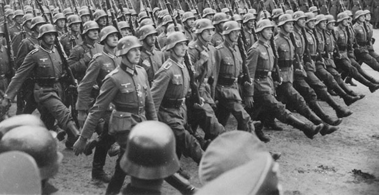
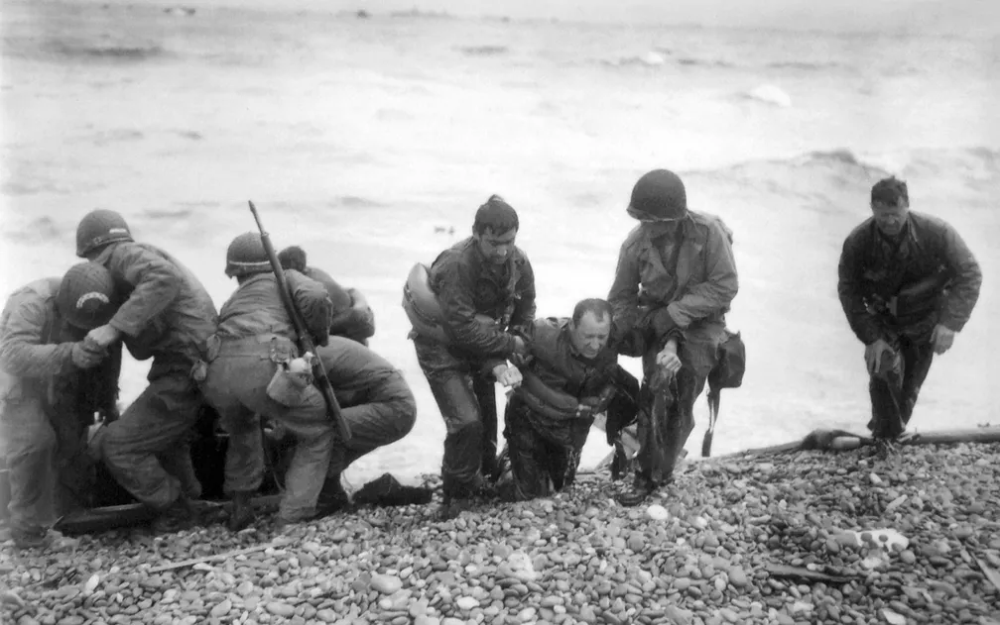

A Alemanha desempenhou um papel central e controverso durante a Segunda Guerra Mundial, que ocorreu de 1939 a 1945. Sob o domínio do Partido Nazista liderado por Adolf Hitler, o país experimentou uma rápida ascensão ao poder e uma política agressiva de expansão territorial.
Em 1933, Hitler se tornou o chanceler da Alemanha e, pouco depois, consolidou seu poder como ditador, estabelecendo um regime totalitário. Através de uma retórica nacionalista, racista e antissemita, o regime nazista perseguiu minorias, suprimiu a oposição política e impôs uma política de rearmamento, desafiando abertamente as restrições impostas pelo Tratado de Versalhes após a Primeira Guerra Mundial.

Em 1939, a Alemanha invadiu a Polônia, provocando a eclosão da Segunda Guerra Mundial. Durante os primeiros anos de conflito, as forças alemãs, conhecidas como Wehrmacht, conquistaram rapidamente vastas áreas da Europa Ocidental, incluindo França, Bélgica, Holanda e Noruega. Hitler também implementou uma política de genocídio, resultando no Holocausto, no qual seis milhões de judeus foram assassinados em campos de concentração.
Entretanto, à medida que a guerra avançava, a Alemanha enfrentou desafios significativos, especialmente após a invasão fracassada da União Soviética em 1941. As forças alemãs enfrentaram uma guerra brutal no Front Oriental e foram gradualmente forçadas a recuar.
Em 1944, os Aliados (Estados Unidos, Reino Unido e União Soviética) iniciaram a invasão da Europa Ocidental através do Dia D, um desembarque maciço na Normandia, França. A Alemanha se viu pressionada em duas frentes: tanto no Leste quanto no Oeste.

Em 1945, com a aproximação das forças Aliadas de Berlim, Hitler se suicidou em seu bunker. Pouco depois, a Alemanha se rendeu incondicionalmente, marcando o fim da Segunda Guerra Mundial na Europa. O país ficou dividido em zonas de ocupação controladas pelos Aliados, com a Alemanha Oriental dominada pela União Soviética e a Alemanha Ocidental sendo influenciada por Estados Unidos, Reino Unido e França.
A Segunda Guerra Mundial deixou um legado de destruição e sofrimento, com a Alemanha enfrentando as consequências de suas ações e buscando uma nova identidade política e social nas décadas seguintes. O país se reconciliou com suas atrocidades passadas, tornando-se um exemplo de uma nação que trabalha para enfrentar e superar seu sombrio passado. Hoje, a Alemanha é uma democracia próspera, com uma forte economia e um compromisso contínuo com a paz e a cooperação internacional.